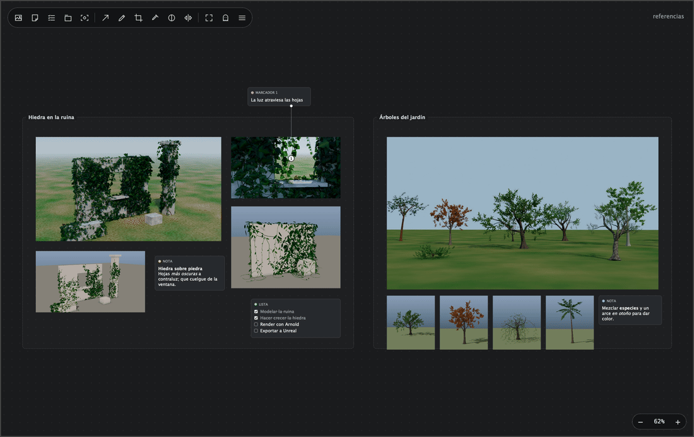
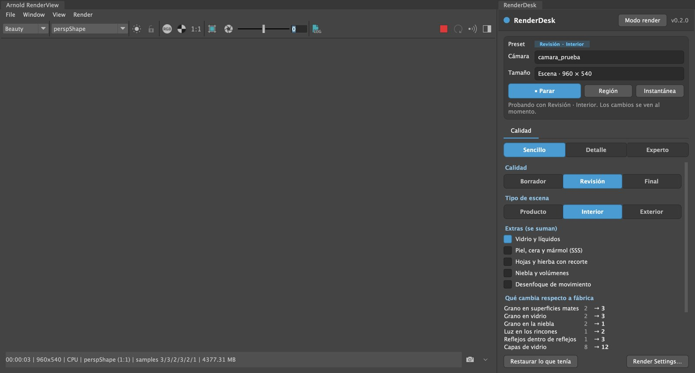

El estante está ordenado así a propósito: de izquierda a derecha es el camino de una escena, y los dos últimos grupos se usan durante todo el proyecto. No hace falta usar todas las herramientas: cada una funciona sola.
1. Empezar el proyecto: Muro
Antes de modelar, reúne lo que quieres conseguir.
- Clic en Muro. Se abre el tablero de la escena (se guarda en
sourceimages/murodel proyecto). - Arrastra fotos de ruinas, hiedra y luz de atardecer. Agrúpalas en marcos con Ctrl+G.
- Escribe notas (N) y una lista de tareas (L).
- Mientras modelas, activa el Fantasma: el tablero queda transparente encima del visor.

2. Construir: Árboles, Trepadora y GrassEditor
Con el escenario modelado (o con la escena de ejemplo de cada herramienta):
- Árboles: planta unos olivos o un roble con Biblioteca para plantar. Todos los árboles iguales son copias de un maestro: si cambias el maestro, cambian todos.
- Trepadora: selecciona las paredes, pon el origen con un clic, pulsa Crecer hasta que te guste la forma y luego Crear malla. Pon cajas delante de las ventanas para que la hiedra las rodee.
- GrassEditor: selecciona el suelo y crea una capa. Dibuja una curva para el camino y deja que la hierba se aparte de los troncos de Árboles. Mira el semáforo: verde va sobrado.

Consejo
GrassEditor reconoce los árboles de Árboles y aclara la hierba bajo sus copas.
3. Look y render: Materials, LightManager y RenderDesk
- Materials: elige recetas (piedra, madera, metal…) y ajusta la rugosidad. Si vas a pintar texturas, Enviar a Painter y, al exportar desde Painter, las texturas llegan solas a Maya. Lee los avisos de la esfera.
- LightManager: en modo Escena, pon el sol a la hora del atardecer de tu ciudad, convierte las ventanas en portales y enciende las lámparas. Abre Comprobar antes de renderizar.
- RenderDesk: activa el Modo render, combina presets (Revisión · Exterior · Hojas y hierba con recorte) y pulsa Probar. Compara pruebas con A/B y lanza el render final en segundo plano.

Trepadora, Árboles y Materials usan el mismo tipo de material, OpenPBR, así que todo responde igual a la luz. Ver OpenPBR.
4. Siempre a mano: SimpleSave y Radial
Durante todo el proyecto:
- SimpleSave: guarda versión cada vez que termines una parte («pared modelada», «hiedra», «luces de atardecer»). Si Maya se cierra, al volver te ofrece recuperar el autoguardado. Al final, Entregar prepara un
.zipcon la escena y sus texturas. - Radial: Tab Tab sobre el visor abre tus órdenes más usadas. Con el radial automático cambia solo entre modelado, UV, animación y render.

Resumen
| Fase | Herramienta | Resultado |
|---|---|---|
| Idea | Muro | Un tablero con referencias y notas, guardado con la escena |
| Vegetación | Árboles, Trepadora, GrassEditor | Árboles, hiedra y hierba ligeros, con texturas incluidas |
| Materiales | Materials | Materiales OpenPBR con valores reales y texturas conectadas |
| Luz | LightManager | Luces en pasos y Kelvin, sol por hora y comprobaciones |
| Render | RenderDesk | Presets combinados, pruebas comparables y render final |
| Todo el tiempo | SimpleSave, Radial | Versiones con nota, copias automáticas y órdenes a mano |